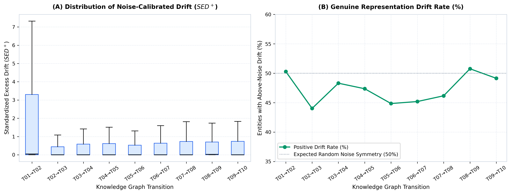
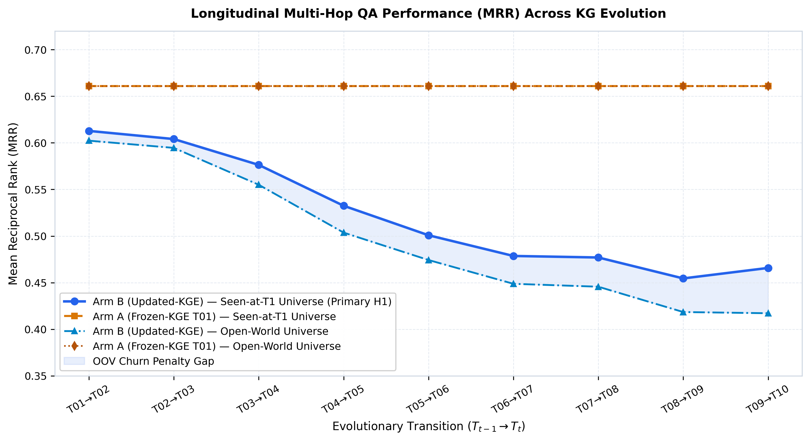
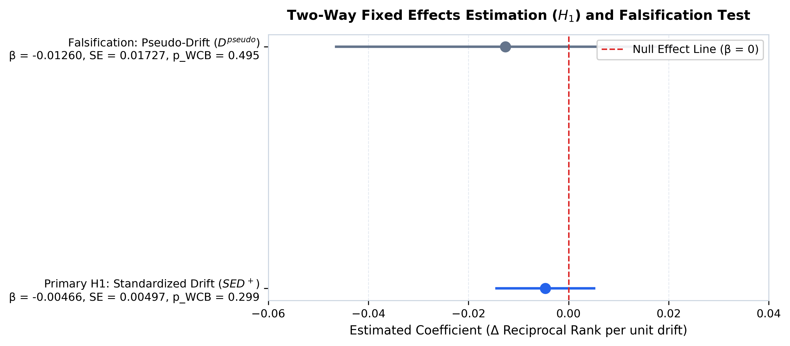

Định lượng trôi dạt biểu diễn KGE và tác động lên suy luận đa bước qua 10 snapshot thời gian (T01–T10)



| Mô hình | Biến giải thích | Hệ số β | SE Cụm | t-stat | WCB p-value | Kết luận |
|---|---|---|---|---|---|---|
| Primary H1 (Two-Way FE) | Standardized Drift (SED+) | -0.00466 | 0.00497 | -0.94 | 0.299 | Inconclusive |
| Falsification (Same-snapshot) | Pseudo-Drift (D_pseudo) | -0.01260 | 0.01727 | -0.73 | 0.495 | PASS (Không spurious) |